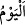
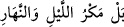

ebedî azâbı tadın!
Cehennem ehlinin dünyâya geri dönme taleplerine karşılık şöyle buyruluyor: “Bu güne
kavuşmayı unutmanızın karşılığında (azâbı) şimdi tadın bakalım!”
“
(unutmak)”, insanın kendisine emânet edilen şeyi koruyup muhâfaza etmeyi terk
etmesidir. Bu, ya kalbin zaafiyetinden, ya gafletten ya da bilinçli bir şekilde hatırdan
çıkmasına göz yummaktan kaynaklanır. İnsandan zuhur eden ve Allah Teâlâ’nın
zemmettiği unutma, bu âyette olduğu gibi kasıtlı olarak yapılanıdır.
Âyetteki (“karşılığında” anlamı verilen) “Bâ” harfi, her ne kadar (önceki âyette
zikredilen) azâb etme hakkında Allah Teâlâ’dan kesin söz çıkmış olsa da, onlar
tarafından da azâba dûçar olmayı gerekli kılan bir sebebin olduğuna işâret etmektedir.
Çünkü Allah onların kötü seçimini ezelî ilmi ile biliyordu. Bu sebep, onların dünyâya
âid lezzetlerle ve şehvetlerle meşgul olarak bu korkunç güne kavuşmayı unutmaları, onu
düşünmeyi ve ona hazırlanmayı tamamen terk etmeleridir. Dünyâya aşırı dalmak, cinlere
ve insanlara, âhireti ve orada gerçekleşecek olan Allâh’a kavuşma, hesâba tâbi tutulma
ve amellerin karşılığını görme gibi hususları hatırlamaktan uzaklaştırır ve onların
üzerine unutmayı musallat eder.
Âyette “
(kavuşma)” kelimesinin “
(gün)” kelimesine izâfe edilmesi, “
(Hayır! Gece gündüz (işiniz) tuzak kurmaktı)” (Sebe’, 34/33)
ifâdesindeki izâfet gibidir. Yâni ‘bugününüzde Allâh’a kavuşmayı…’ demektir.
et-Te’vîlât’ta denilmiştir ki: “İşâret etmektedir ki, siz gafletteydiniz. Uyuyan kimse ise
uyuduğu sürece üzerindeki azâbın elemini tatmaz. Fakat uykudan uyanınca, dûçar olduğu
azabın acısını tadar. Esasen insanlar uyku hâlindedirler; içinde bulundukları azâbın
farkında değildirler. Öldükleri zaman kendilerine gelip uyanırlar. İşte o zaman onlara:
“Bu güne kavuşmayı unutmanızın karşılığında (azâbı) şimdi tadın bakalım!” denir.
“Doğrusu biz de sizi unuttuk;” sizi aşağılayarak ve terk ettiklerinize karşılık olarak
unutulan kimse gibi tamamen azâbın içinde terk edip bıraktık.
et-Te’vîlâtü’n-Necmiyye’de der ki: “Siz bize hizmeti unuttuğunuz gibi, Biz de size
rahmeti unuttuk.”
Artık, dünyâda iken inkâr ve isyân gibi “yaptıklarınızdan ötürü” cehennemde “ebedî
azâbı tadın!”
Âyette iki kez “tadın bakalım” diyerek azâba çarptırılacaklarının ifâde edilmesi, hem
bir te’kiddir, hem de onlara ilâhî gazabı ızhâr etmektir. İkinci ifâdede tatmanın ve
hissetmenin öncekinde gizlenen mef‘ûlünün (azâbın) açıkça zikredilmesi, azâbın
sebebinin sadece zikredilen unutmaları olmadığını, aksine onların dünyâda iken ısrarla
ve kararlılıkla işlemeyi sürdürdükleri türlü inkâr ve isyanları gibi sebepleri olduğunu
beyan etmek içindir.
Kâ‘bu’l-Ahbâr (r.a.)’ın şöyle dediği rivâyet edilmiştir: “Kıyâmet günü olduğunda
melekler kalkar ve günahkârlar için şefâatçi olurlar. Sonra şehidler kalkar onlar da
şefâatçi olurlar. Sonra diğer mü’minler kalkar ve onlar da şefâatçi olurlar. Nihâyet